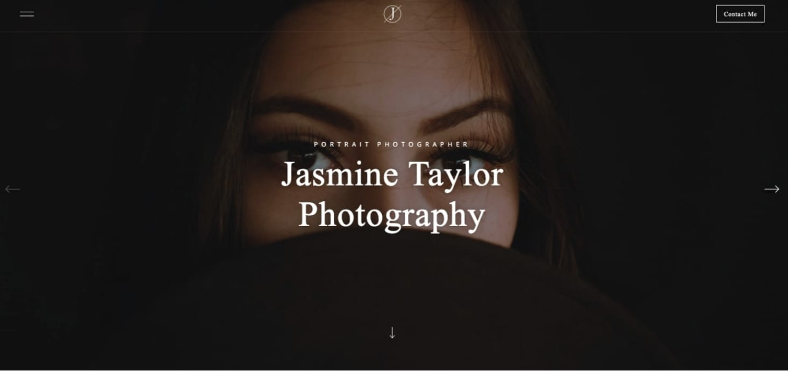

As a photographer, it’s important to get the visuals right while establishing your online presence. Having a unique and professional portfolio will make you stand out to potential clients. The only problem? Most website builders out there offer cookie-cutter options — making lots of portfolios look the same.
That’s where a platform like Webflow comes to play. With Webflow you can either design and build a website from the ground up (without writing code) or start with a template that you can customize every aspect of. From unique animations and interactions to web app-like features, you have the opportunity to make your photography portfolio site stand out from the rest.
So, we put together a few photography portfolio websites that you can use yourself — whether you want to keep them the way they are or completely customize them to your liking.
Here are 12 photography portfolio templates you can use with Webflow to create your own personal platform for showing off your work.
